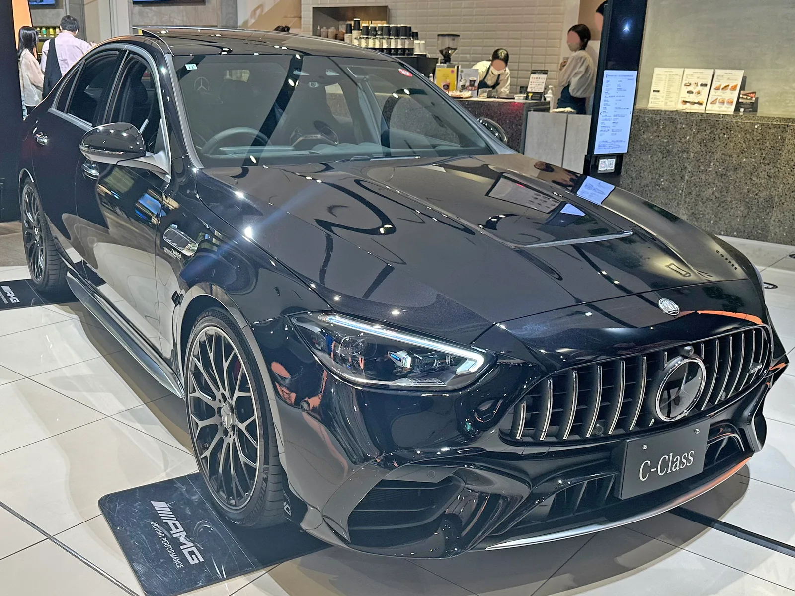
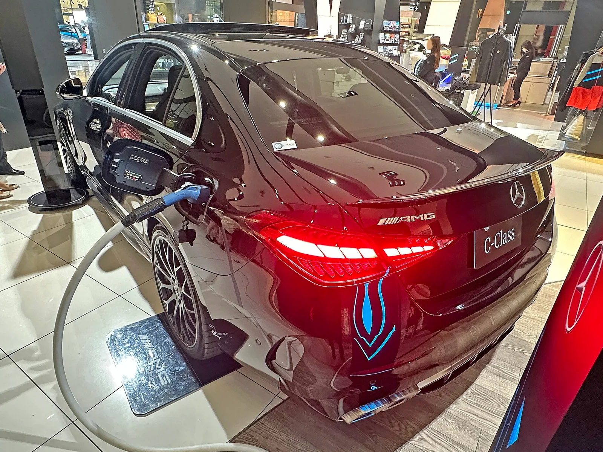
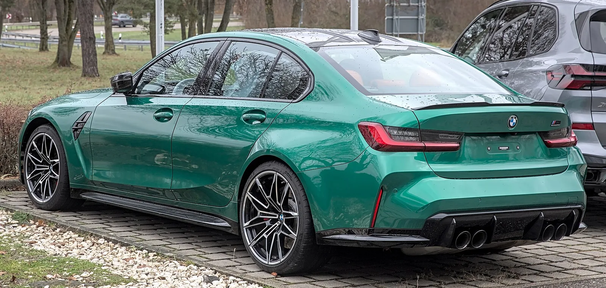
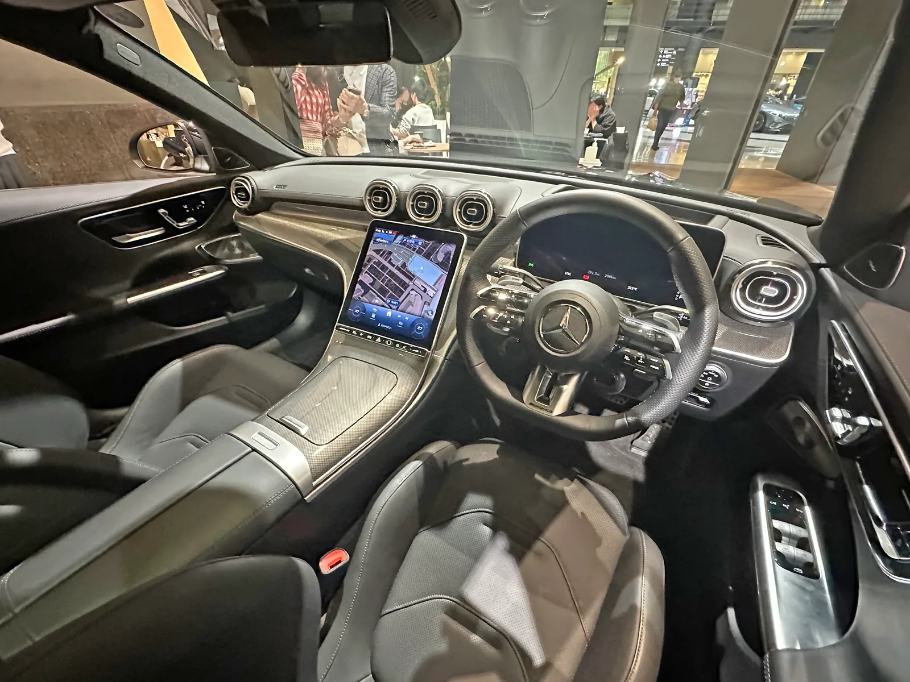

▲ 매장에 전시된 현행 메르세데스-AMG C63 S E 퍼포먼스. 순수전기 C클래스는 이 차의 후속 고성능 포지션을 이어받을 전망이다
1. 프로토타입에 등장한 팝업식 리어 스포일러
메르세데스-AMG가 개발 중인 순수전기 고성능 C클래스의 최신 프로토타입이 새로운 리어 스포일러를 단 채 포착됐다. 해외 매체 카스쿱스(Carscoops)가 공개한 스파이샷에 따르면, 이 프로토타입은 트렁크 리드 뒤쪽에 팝업식으로 솟아오르는 리어윙을 장착하고 있었다. 단순한 디자인 요소가 아니라 고속 주행 시 후륜 접지력을 높이기 위한 능동형 공기역학 장치로 추정된다.
전기 AMG C클래스는 위장막을 두른 상태로 여러 차례 목격돼 왔지만, 이번처럼 리어 스포일러가 작동하는 모습이 포착된 것은 처음이다. 차체 하단에는 여전히 두꺼운 위장 패널이 둘러져 있어 정확한 범퍼 형상과 디퓨저 디자인은 아직 베일에 싸여 있다.
▲ 현행 AMG C63 S E 퍼포먼스 전측면. 순수전기 C클래스는 이와는 완전히 다른 전용 전기차 플랫폼을 사용할 것으로 보인다 ⓒ Wikimedia Commons

▲ 메르세데스-AMG 본사 어펠터바흐에서 공개된 전동화 라인업 공식 티저 이미지(전기 C클래스 전용 티저는 아니며, AMG의 전동화 전환 흐름을 보여주는 참고 이미지다) ⓒ Mercedes-AMG
2. 예상 출력 778마력, 트라이모터 구성 유력
업계에서는 전기 AMG C클래스의 최고출력이 약 778마력(789PS, 580kW) 수준일 것으로 내다보고 있다. 이는 야사(YASA)의 액시얼 플럭스 모터를 앞뒤로 나눠 배치하는 삼중 모터(트라이모터) 구성을 통해 달성될 가능성이 거론된다. 야사는 메르세데스-AMG의 모기업인 메르세데스-벤츠 그룹이 지분을 보유한 영국의 고성능 전기모터 전문 업체로, 이미 AMG의 다른 고성능 전동화 모델에도 관련 기술이 적용된 바 있다.
| 모델 | 예상 최고출력 | 포지션 |
|---|---|---|
| 메르세데스-벤츠 C400 (EV) | 482마력 | 기본형 전기 C클래스 |
| 메르세데스-AMG 전기 C클래스 | 약 778마력(추정) | 고성능 AMG 버전 |
| 메르세데스-AMG CLA 45 EV | 671마력 | 준중형 고성능 비교 모델 |

▲ 현행 내연기관 메르세데스-벤츠 C클래스(W206). 전기 C클래스는 이와 별개의 전용 전기차 플랫폼을 사용하지만, 외관 디자인 언어는 계승할 것으로 보인다 ⓒ Wikimedia Commons

▲ 내연기관 시절의 메르세데스-AMG CLA 45 S. 순수전기 CLA 45 EV는 671마력(680PS, 500kW)의 트라이모터 파워트레인으로 이미 공식 출시됐으며, 전기 AMG C클래스 출력 추정치의 비교 기준이 되고 있다 ⓒ Wikimedia Commons
📍 참고로 알아두면 좋은 것
위 수치는 아직 메르세데스-AMG가 공식 발표한 사양이 아니라, 스파이샷과 파워트레인 동향을 토대로 한 해외 매체의 추정치다. 실제 양산 사양과는 차이가 있을 수 있다.
3. 배터리와 충전 성능, C400보다 낮은 용량 예상
전기 AMG C클래스의 배터리 용량은 기본형인 C400 EV의 94kWh보다 작을 것으로 예상된다. 이는 고성능 모델 특유의 무게 절감 전략과 관련이 깊은데, 배터리 용량을 다소 줄이는 대신 출력과 응답성을 극대화하는 방향으로 설계될 가능성이 크다. C400 EV는 최대 330kW급 직류 급속충전을 지원하는데, AMG 버전 역시 이와 비슷하거나 더 빠른 충전 성능을 갖출 것으로 예상되지만, 배터리 용량이 작아지는 만큼 1회 충전 주행거리는 C400보다 짧아질 전망이다.

▲ 충전 중인 현행 AMG C63 S E 퍼포먼스. 전기 AMG C클래스 역시 고속 충전 성능을 갖출 것으로 보이지만 정확한 수치는 공개되지 않았다 ⓒ Wikimedia Commons
4. BMW 첫 전기 M3와의 정면 대결
전기 AMG C클래스의 가장 유력한 경쟁자는 BMW가 개발 중인 브랜드 최초의 순수전기 M3다. BMW는 차세대 M3에 네 바퀴를 각각 독립 구동하는 콰드모터(4모터) 순수전기 파워트레인을 준비 중이며, 예상 출력은 800~900마력 수준으로 거론된다(일각에서는 최대 1,000마력 가능성도 제기). 두 모델 모두 2027년을 전후해 시장에 등장할 것으로 예상된다. 내연기관 시절부터 이어져 온 AMG C63과 BMW M3의 라이벌 구도가 전동화 시대에도 그대로 이어지는 셈이다.
다만 두 모델의 출력 격차가 실제 양산 단계에서 어떻게 좁혀질지는 아직 미지수다. BMW 첫 전기 M3에 대한 자세한 소식은 BMW M 공식 홈페이지에서도 확인할 수 있다. 바로가기

▲ 현행 내연기관 BMW M3 컴페티션(G80). BMW는 이 모델의 후속으로 브랜드 최초의 순수전기 M3를 준비하고 있다 ⓒ Wikimedia Commons
5. 실내는 어떻게 바뀔까
전기 AMG C클래스의 실내는 현행 C63 S E 퍼포먼스의 하이퍼스크린 기반 레이아웃을 계승하되, 순수전기 모델에 맞춘 그래픽과 소프트웨어가 새롭게 적용될 가능성이 크다. 메르세데스-벤츠는 최근 출시하는 신형 모델마다 파노라믹 형태의 디스플레이와 AMG 전용 주행 모드 인터페이스를 강화해왔는데, 전동화 C클래스 역시 이러한 흐름을 따를 것으로 예상된다.
✅ 전기 AMG C클래스, 이것만은 확인하세요
· 최근 프로토타입에서 팝업식 리어 스포일러 최초 포착
· 예상 최고출력 약 778마력, 야사 트라이모터 구성 유력
· 배터리 용량은 C400 EV(94kWh)보다 작을 것으로 예상
· 2027년 출시 예정, BMW 첫 전기 M3와 정면 경쟁
· 아직 공식 사양 미발표, 스파이샷 기반 추정치 위주

▲ 현행 AMG C63의 실내. 하이퍼스크린과 AMG 전용 스티어링 휠이 적용됐다 ⓒ Wikimedia Commons
6. 정리
전기 AMG C클래스는 팝업식 리어 스포일러를 단 프로토타입이 포착되며 개발 막바지 단계에 접어들었음을 시사했다. 예상 출력은 778마력 안팎으로, BMW가 준비 중인 첫 전기 M3와 2027년경 정면으로 맞붙을 전망이다. 다만 배터리 용량, 정확한 출력, 국내 출시 여부 등 세부 사항은 아직 공식화되지 않아 향후 발표를 지켜볼 필요가 있다.